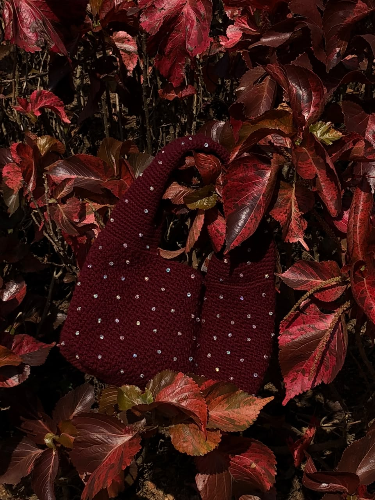

A Look Inside the Studio
Click on any image to zoom in and see our detailed premium crochet stitches up close.


Perfectly Hooked began from a very simple place: I needed something to do. Over time, crochet became more than just a hobby; it was a calming and grounding escape that helped me slow down and find peace in the process.
What started as a way to pass time quickly turned into something I genuinely loved. Over time, I found myself especially drawn to crocheting bags. There’s just something incredibly satisfying about watching yarn transform into something beautiful and functional with just a hook, patience, and skill.
By June 2025, what began as a personal escape officially became a business. Perfectly Hooked was born out of passion, growth, and creativity. We don't believe in rushed production; we believe in creating functional pieces that can be felt and seen in every single bag!
Every piece I create is a reflection of that journey, and I am deeply grateful to God for the gift of creativity and the ability to turn simple materials into something meaningful. Thank you for supporting this dream and carrying a piece of my heart with you.

Click on any image to zoom in and see our detailed premium crochet stitches up close.